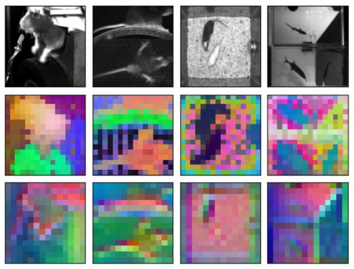
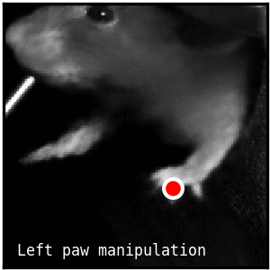
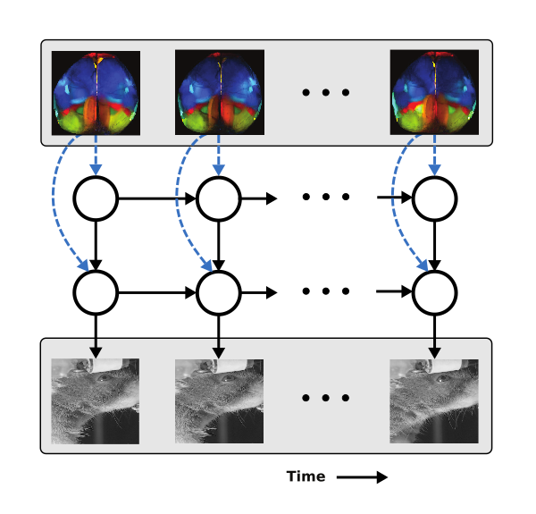
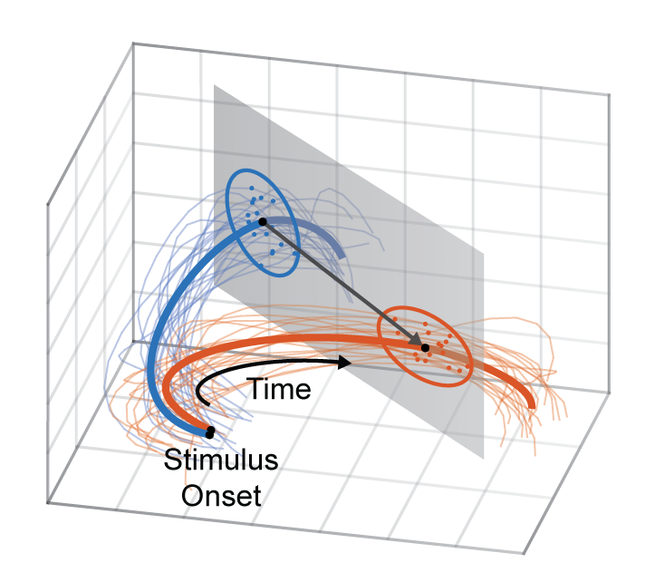
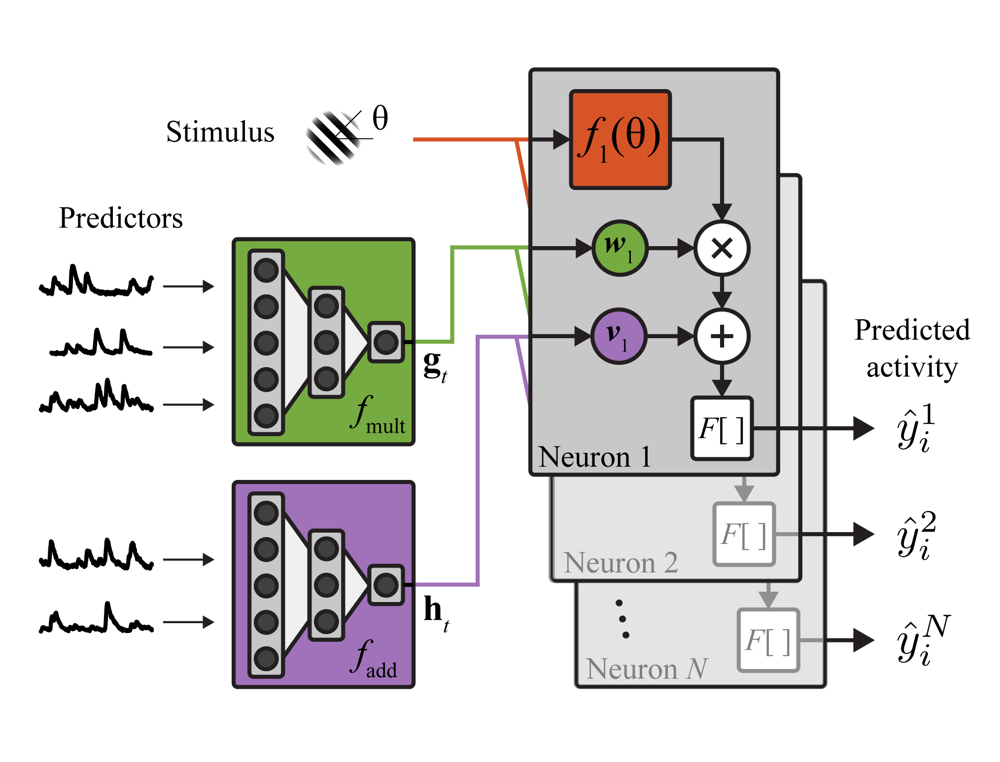
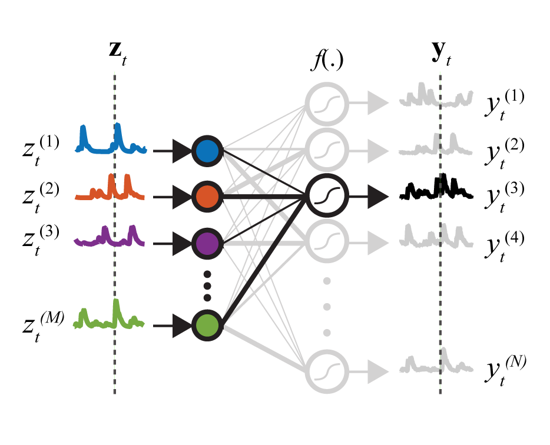
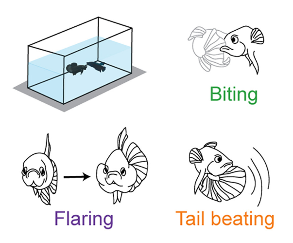
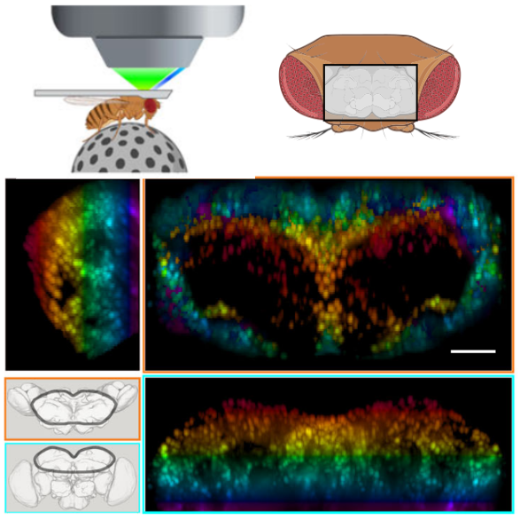
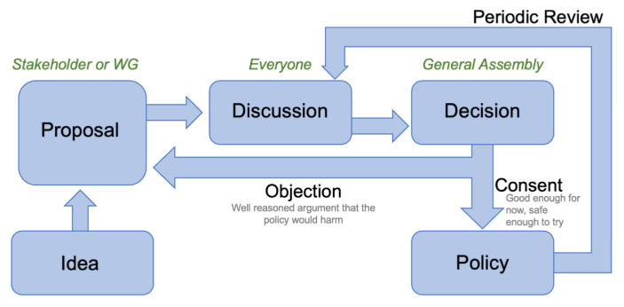
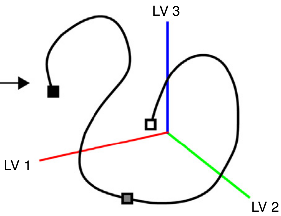

BEAST
BEAST is a novel and scalable framework that pretrains experiment-specific vision transformers for diverse neuro-behavior analyses, including prediction of neural activity from behavior; pose estimation; and action segmenation. BEAST combines masked autoencoding with temporal contrastive learning to effectively leverage unlabeled video data.
paper | code
Lightning Pose
Lightning Pose (LP) is an industry-grade pose estimation software package that utilizes unlabeled frames to train better models. LP uses unsupervised training objectives that penalize the network whenever its predictions violate a variety of spatiotemporal constraints. It also uses a new network architecture that predicts the pose for a given frame using temporal context from surrounding unlabeled frames. We provide a browser-based app for data labeling and model training and evaluation.
paper | code | app
Partitioned Subspace VAE
The PS-VAE is a behavioral video analysis tool that combines the output of supervised pose estimation algorithms (e.g. DeepLabCut) with unsupervised dimensionality reduction methods (e.g. VAEs) to produce interpretable, low-dimensional representations of behavioral videos that extract more information than pose estimates alone. We show how these interpretable representations can be used to characterize the dynamics of behavior, as well as improve the precision of neural decoding analyses.
paper | code
BehaveNet
BehaveNet is a probabilistic framework that provides tools for compression, segmentation, generation, and decoding of behavioral videos. Compression is performed using convolutional autoencoders (CAEs). An autoregressive hidden Markov model segments the continuous CAE representation into discrete "behavioral syllables". Based on this generative model, we develop a novel Bayesian decoder that takes in neural activity and outputs probabilistic estimates of the behavioral video.
paper | code
Decoding in the presence of shared neural variability
We develop a new decoding framework for estimating stimulus identity from recorded neural population activity. Our framework exploits the low-dimensional structure of this activity, resulting in a linear estimator that is more efficient than those from other common linear decoding algorithms. Furthermore, this framework admits a straighforward nonlinear extension that compares favorably to other nonlinear decoding algorithms.
preprint
Characterizing shared variability in cortical neuron populations
Variability in neural population responses from early sensory areas often contains low-dimensional structure. Here we introduce two new classes of nonlinear latent variable models to characterize this structure. Both model classes rely on autoencoder neural networks for latent variable inference; one class models arbitrary nonlinear interactions while the other explicitly models additive and multiplicative modulations of stimulus responses.
paper | paper code | model code
A rectified latent variable model for analyzing neural population recordings
We propose the Rectified Latent Variable Model (RLVM) for analyzing neural population activity. The RLVM constrains latent variables to be both rectified and smooth. We demonstrate the advantages of these constraints using both simulated and experimental data, and show how initialization-dependent solutions can be improved by initializing model components with an autoencoder neural network.
paper | code
A brain-wide map of neural activity during complex behaviour
We report a comprehensive set of electrophysiological recordings from 621,733 neurons spanning 279 brain regions, recorded across 139 mice in 12 laboratories. The data were obtained from mice performing a decision-making task with sensory, motor and cognitive components. We provide an initial appraisal of this brain-wide map and assess how neural activity encodes key task variables.
paper
Coordination and persistence of aggressive visual communication in Siamese fighting fish
Outside acoustic communication, little is known about how animals coordinate social turn taking and how the brain drives engagement in these social interactions. Using Siamese fighting fish (Betta splendens), we discover dynamic visual features of an opponent and behavioral sequences that drive visually driven turn-taking aggressive behavior. Our work highlights how dynamic visual cues shape the rhythm of social interactions at multiple timescales.
paper
The spatial and temporal structure of neural activity across the fly brain
What are the spatial and temporal scales of brainwide neuronal activity? We used microscopy to image all cells in a large volume of the brain of adult Drosophila with high spatiotemporal resolution while flies engaged in a variety of spontaneous behaviors. This revealed neural representations of behavior on multiple spatial and temporal scales.
paper
20 lessons in team science: learning from the experience of the International Brain Laboratory
Machine learning should not be a replacement for human judgment but rather help us embrace the various assumptions and interpretations that shape behavioral research.
paper
Beyond the algorithmic oracle: rethinking machine learning in behavioaral neuroscience
Machine learning should not be a replacement for human judgment but rather help us embrace the various assumptions and interpretations that shape behavioral research.
article
The quest for interpretable models of neural population activity
We argue that while latent variable models are often used to visualize neural population activity, new methods must go beyond visualization and relate explicitly to function. Structured latent variable models can define specific computational roles for latent variables, and modeling the dynamics of latent variables provides a new perspective on neural computations.
paper